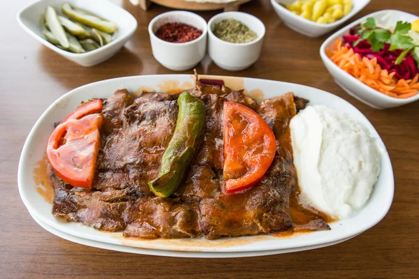

Iskender

Ingredienten
- 500g kalfsvlees
- 2 groene pepers
- 2 lepels zonnebloemolie
- 3 theelepels zout
- 2 theelepels peper
- 5 teentjes knoflook
- halve turks brood
- 50g Roomboter
- 1 ui
- peterselie
Bereiding
- begin met het snijden van het vlees in hele dunne plakjes
- snijd de ui door midden en in kleine dunne stukjes
- Bestuif de bol deeg en de kom met wat bloem. Doe er een vel plasticfolie over.
- Laat het 1 uur rijzen op een warme plaats.
-
Verdeel het deeg in porties. Bestuif met wat bloem en maak bolletjes. Laat nog eens 15 tot 30 minuten rijzen onder een schone keukenhanddoek.